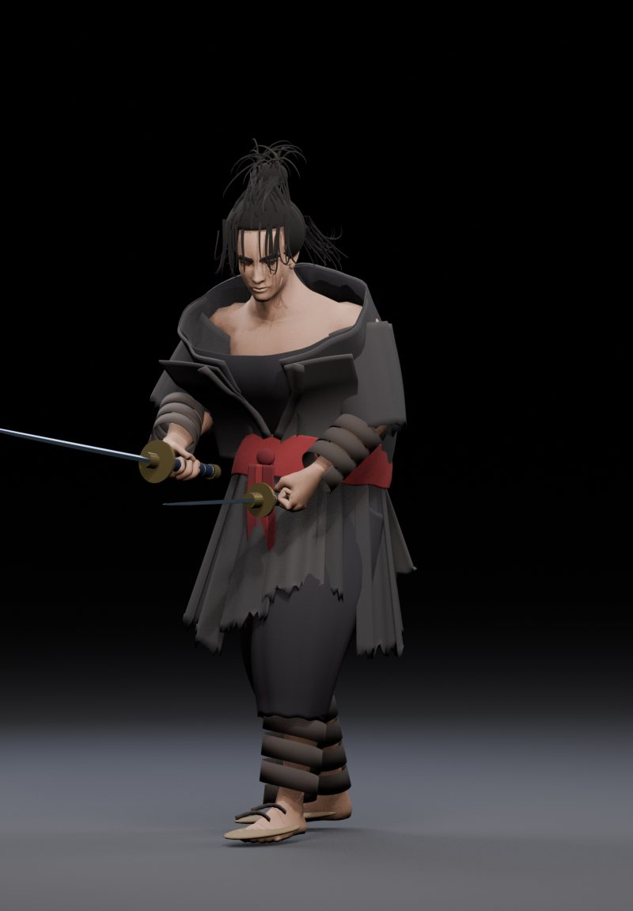
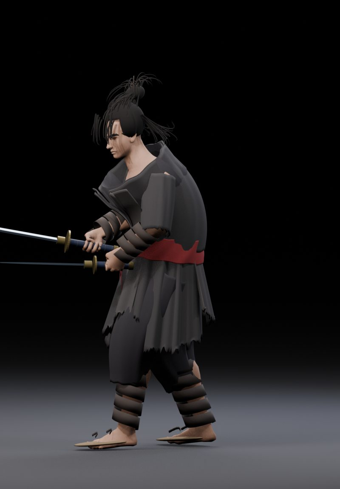
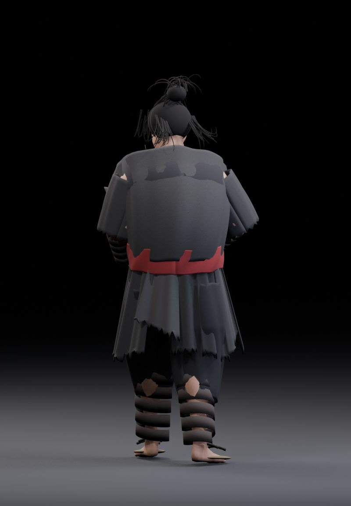

기준 시트의 핵심 요소
| 얼굴 | 날카롭고 거친 검객 인상 |
| 헤어 | 거친 검은 장발·상투 |
| 겉옷 | 찢어진 짙은 흑갈색 기모노 |
| 허리띠 | 낡은 붉은 천·긴 자락 |
| 하체 | 넉넉한 바지, 종아리 붕대, 짚신 |
| 무기 | 오른손 장검, 왼손 단검 |
검토 결과
아직 미달: 얼굴의 닮은 정도, 머리카락 형상, 자연스러운 천 주름과 질감, 붕대 형태, 전반적 게임 아트 품질.
기존 골격과 무기를 유지한 상태에서 새 의상과 머리의 3D 형상을 만들었습니다. 애니메이션이나 의상 변형은 검증하지 않았습니다.
이미지를 누르면 확대됩니다. 완성된 캐릭터로 오인하지 않도록 외형 검증 이후에만 다음 단계로 넘어갑니다.